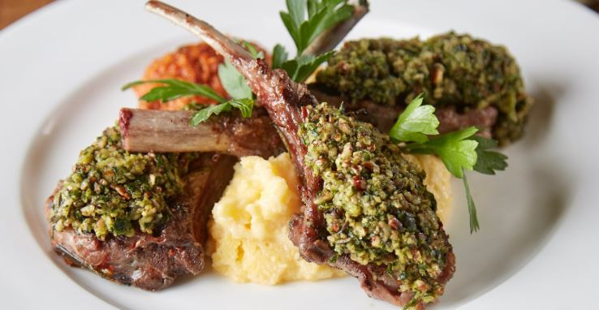
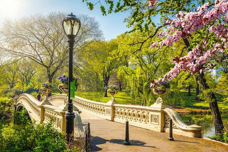
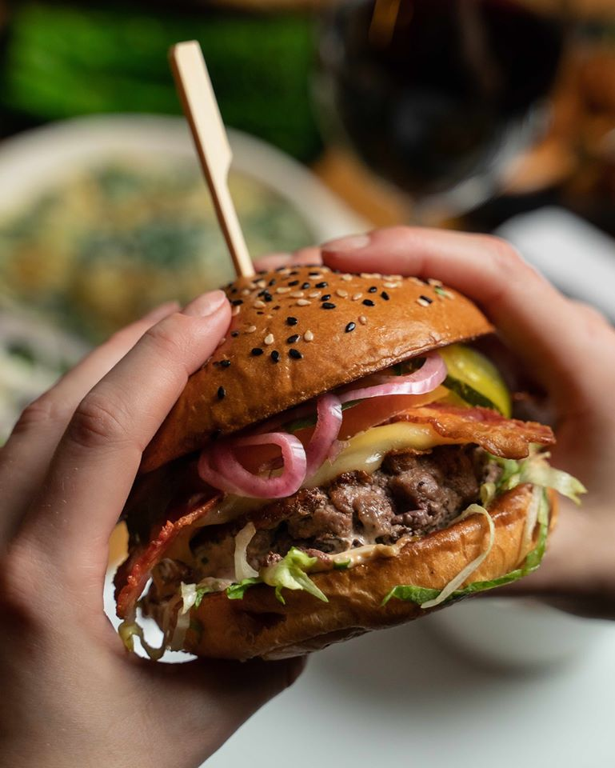
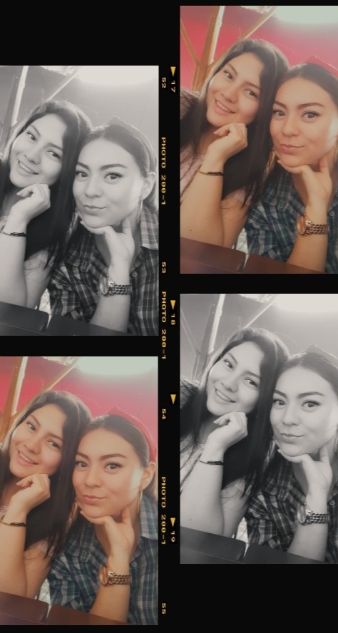
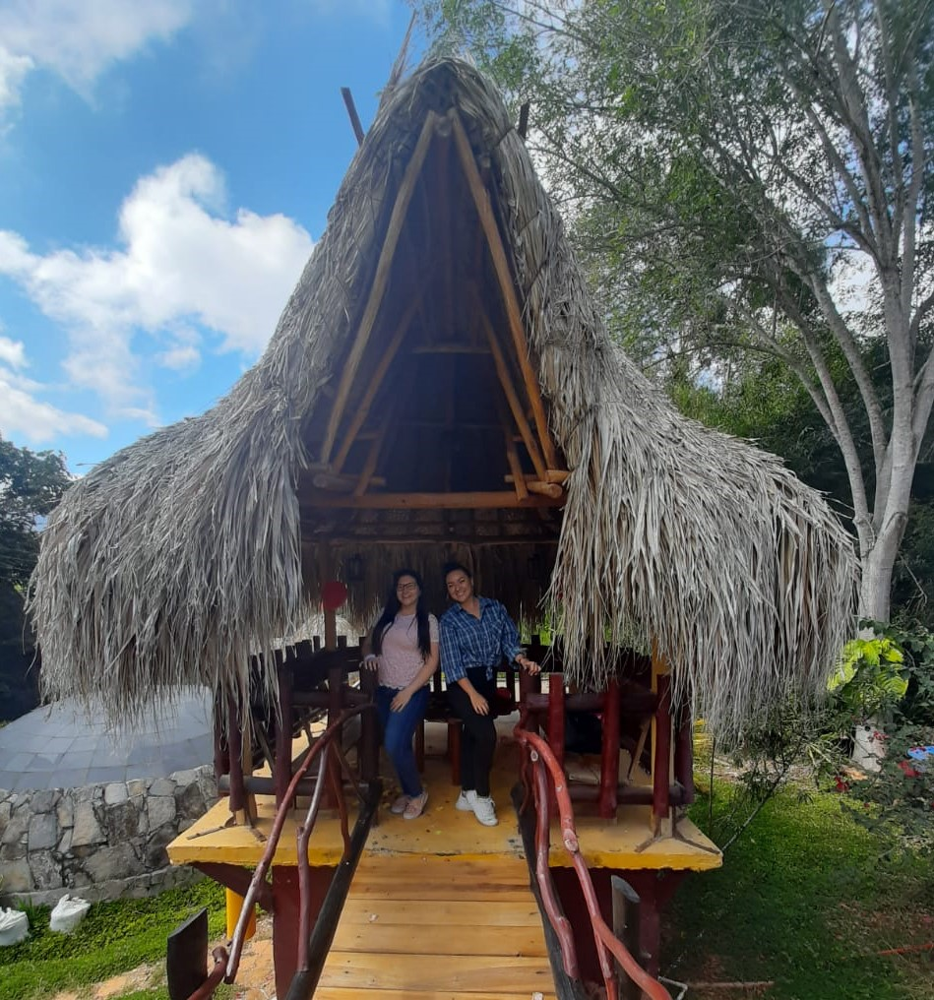

NEW YORK CITY

New York City (NYC), is the most populous city in the United States. With an estimated 2018 population of 8,398,748 distributed over about 302.6 square miles (784 km2), New York is also the most densely populated major city in the United States. Located at the southern tip of the U.S. state of New York, the city is the center of the New York metropolitan area, the largest metropolitan area in the world by urban landmass. With almost 20 million people in its metropolitan statistical area and approximately 23 million in its combined statistical area, it is one of the world's most populous megacities. New York City has been described as the cultural, financial, and media capital of the world, significantly influencing commerce, entertainment, research, technology, education, politics, tourism, art, fashion, and sports.
The tourist places that i will got to in New York City is:
My travel Companion in New York City
The tourist places that i will got to in New York City is:
Statue of Liberty
History:
The Statue of Liberty is a colossal neoclassical sculpture on Liberty Island in New York Harbor in New York, in the United States. The copper statue, a gift from the people of France to the people of the United States, was designed by French sculptor Frédéric Auguste Bartholdi and its metal framework was built by Gustave Eiffel. The statue was dedicated on October 28, 1886.

The statue is a figure of Libertas, a robed Roman liberty goddess. She holds a torch above her head with her right hand, and in her left hand carries a tabula ansata inscribed JULY IV MDCCLXXVI (July 4, 1776 in Roman numerals), the date of the U.S. Declaration of Independence. A broken shackle and chain lie at her feet as she walks forward, commemorating the recent national abolition of slavery. After its dedication, the statue became an icon of freedom and of the United States, seen as a symbol of welcome to immigrants arriving by sea.

Restaurants:
Statue of Liberty Crown Cafe:

What you’ll love about Statue of Liberty Crown Cafe: Both the certified Statue of Liberty Crown Cafe offer an array of healthy and natural edibles. We work diligently to use only the best sustainable practices while offering high quality fare. Alongside our breathtaking panoramas you can enjoy a light snack or an entire meal. Bring your whole family and enjoy!
Finally, we suggest a picnic on the Islands. Grab something to eat from the Crown Cafe and search out a shady picnic spot for your family, friends, or just on your own. Look to the sky and absorb the historic Statue of Liberty and Ellis Islands in their magnificent beauty. Don’t wait, plan your trip today. see more.Lido Harlem Restaurant:
What you’ll love about Lido Harlem Restaurant: The food is memmorably delicious, and the atmosphere is elegant but convivial. The guests say the feel as if they're at the home of a charming Italian friend. see more.
Empire Steak House:

What you’ll love about Empire Steak House: Has the finest cuts of steaks, the freshest seafood and a premium selection of wine, all of which is offered in a beautiful surrounding with exceptional service. In addition to their famous USDA PrimeDry Aged Porterhouse steak, exceptional seafood and 400 plus wine list, Empire has an outstanding Single Malt Scotch list, with over 100 selections. see more.
Times Square
History:

Times Square is a major commercial intersection, tourist destination, entertainment center, and neighborhood in the Midtown Manhattan section of New York City, at the junction of Broadway and Seventh Avenue. Brightly lit by numerous billboards and advertisements, it stretches from West 42nd to West 47th Streets, and is sometimes referred to as "the Crossroads of the World", "the Center of the Universe", "the heart of the Great White Way", and "the heart of the world". One of the world's busiest pedestrian areas, it is also the hub of the Broadway Theater District and a major center of the world's entertainment industry. Times Square is one of the world's most visited tourist attractions, drawing an estimated 50 million visitors annually. Approximately 330,000 people pass through Times Square daily, many of them tourists,[14] while over 460,000 pedestrians walk through Times Square on its busiest days.

Formerly known as Longacre Square, Times Square was renamed in 1904 after The New York Times moved its headquarters to the then newly erected Times Building, now One Times Square. It is the site of the annual New Year's Eve ball drop, which began on December 31, 1907 and continues to attract over a million visitors to Times Square every year. Times Square functions as a town square, but is not geometrically a square; it is closer in shape to a bowtie, with two triangles emanating roughly north and south from 45th Street, where Seventh Avenue intersects Broadway. Broadway runs diagonally, crossing through the horizontal and vertical street grid of Manhattan laid down by the Commissioners' Plan of 1811, and that intersection creates the "bowtie" shape of Times Square.
Restaurants:
Virgil's Real BBQ:

What you’ll love about Virgil's Real BBQ: Virgil’s was the original New York City barbeque restaurant, and has evolved over the years to become a gathering place known for warm service and exceptional barbecued ribs, chicken, brisket, and pork. The vast menu also highlights other comfort food favorites, and varied regional cuisines that complement the famous smoked meats. From Mexican dishes, to Creole and Cajun classics, there is something for everyone at Virgil’s, even vegetarians! Our in-house bakery produces hot buttermilk biscuits, cornbread, and dessert specialties that are a perfect end to any meal. see more.
The View Restaurant:

What you’ll love about The View Restaurant: The View is New York's only revolving restaurant and allows views of much of the city during lunch or dinner. Some parts of the city are covered with other buildings, since The View is not the tallest building in the area, but it does offer interesting views of downtown Manhattan. The restaurant makes a complete turn every 60 minutes, so it will be possible to see all of New York during a lunch, dinner or while enjoying a drink. see more.
Hard Rock Cafe - Times Square:

What you’ll love about Hard Rock Cafe: As one of the city's largest entertainment destinations, Hard Rock Cafe New York features a 708-seat restaurant and a recently opened 1,800-square-foot Rock Shop® with authentic Hard Rock merchandise. Furthermore, the cafe boasts a unique outdoor space above the building's historic marquee, where guests can host private parties amid the lights and excitement of Times Square. see more.
Central Park
History:

Central Park is an urban park in Manhattan, New York City, located between the Upper West Side and the Upper East Side. It is the fifth-largest park in New York City by area, covering 843 acres (3.41 km2). Central Park is the most visited urban park in the United States, with an estimated 37.5–38 million visitors annually, as well as one of the most filmed locations in the world.
The park's main attractions include landscapes such as the Ramble and Lake, Hallett Nature Sanctuary, the Jacqueline Kennedy Onassis Reservoir, and Sheep Meadow; amusement attractions such as Wollman Rink, Central Park Carousel, and the Central Park Zoo; formal spaces such as the Central Park Mall and Bethesda Terrace; and the Delacorte Theater, which hosts Shakespeare in the Park programs in the summer. The park also contains sports facilities including the North Meadow Recreation Center, basketball courts, and baseball and soccer fields.
Central Park was designated as a National Historic Landmark in 1963 and as a New York City scenic landmark in 1974. The park is owned by the New York City Department of Parks and Recreation (NYC Parks) but has been managed by the Central Park Conservancy since 1998, under a contract with the municipal government in a public-private partnership. The Conservancy, a non-profit organization, contributes 75% of Central Park's $65 million annual budget and is responsible for all basic care of the park.

Restaurants:
The Loeb BoatHouse:

What you’ll love about The Loeb BoatHouse: A haven for romantics and nature lovers, this understated icon offers a rare tranquility within the ever-eclectic energy that defines Manhattan. True to its name — rowboats drift about the adjacent lake, as they have for over 150 years. Whether celebrating a special anniversary, meeting an old friend for lunch or enjoying a little spontaneous refreshment—The Loeb Boathouse offers one-of-a-kind choices to satisfy all of your senses. Designed to beautifully coexist with its natural surroundings, The Loeb Boathouse is the only Manhattan venue right on a lake—allowing you to host your wedding, Bar or Bat Mitzvah, or corporate event in spectacular fashion. see more.
Burger & Lobster
What you’ll love about Burger & Lobster:The Burger & Lobster bringing wild lobsters and prime cut burgers to fun and passionate personalities around the world who share our appetite for creativity. Simplicity is at the core of the Burger & Lobster concept, with respect for great food and quality service. see more.
My travel Companion in New York City:
